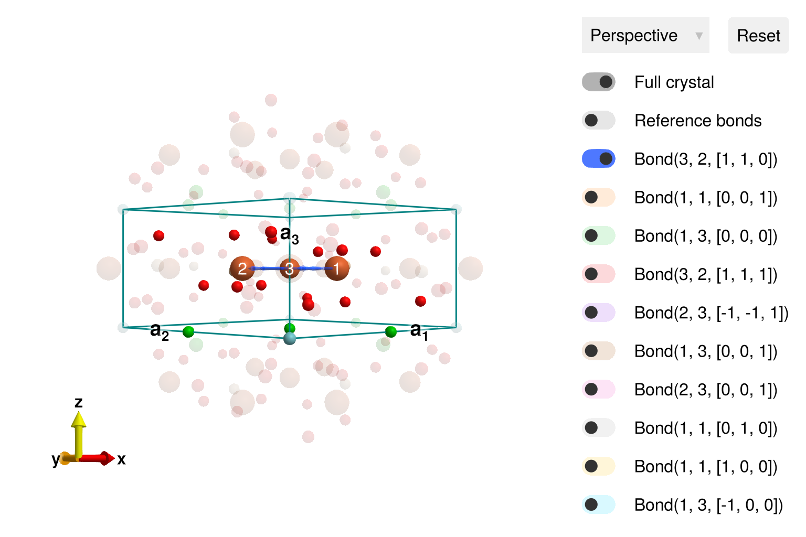
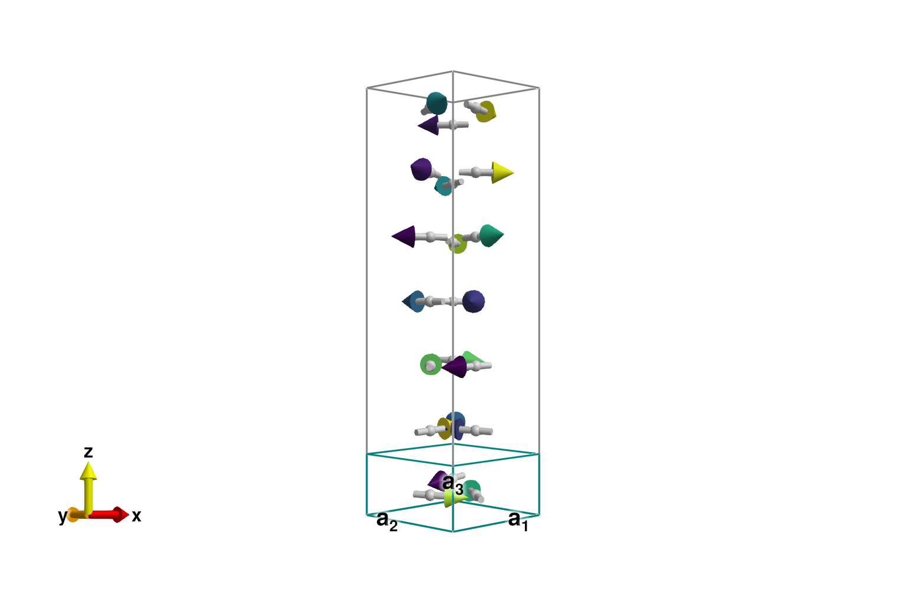
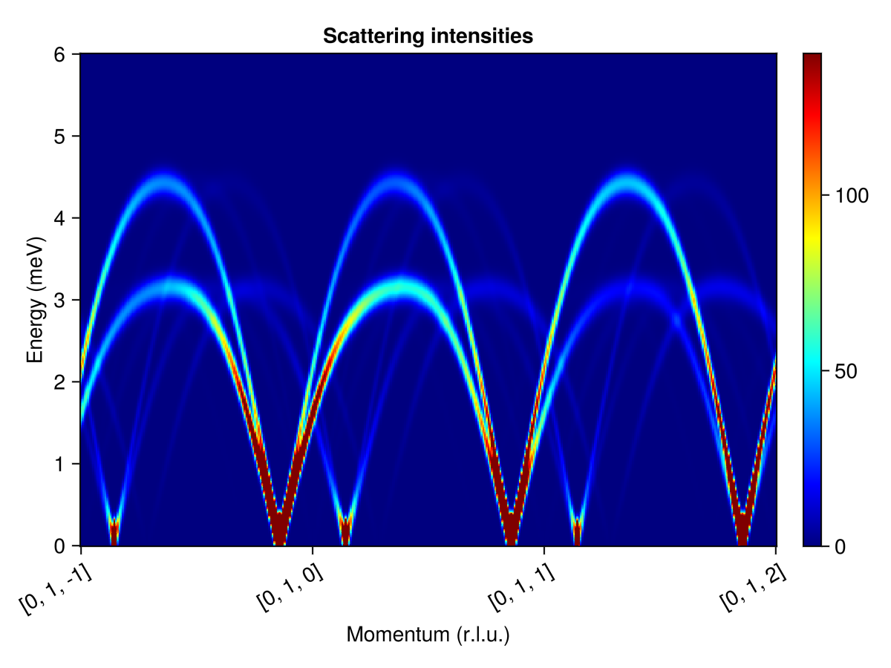
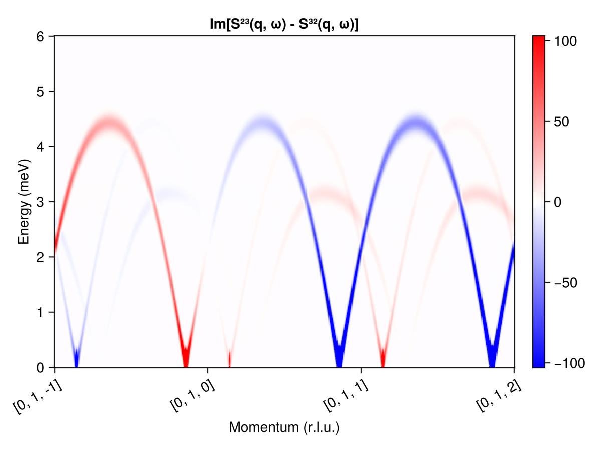

Download this example as Julia file or Jupyter notebook.
SW15 - Ba₃NbFe₃Si₂O₁₄
This is a Sunny port of SpinW Tutorial 15, originally authored by Sandor Toth. It calculates the linear spin wave theory spectrum of Ba₃NbFe₃Si₂O₁₄. The ground state is an incommensurate spiral, which can be directly studied using the functions minimize_spiral_energy! and SpinWaveTheorySpiral.
Load packages
using Sunny, GLMakieSpecify the Ba₃NbFe₃Si₂O₁₄ Crystal cell following Marty et al., Phys. Rev. Lett. 101, 247201 (2008).
units = Units(:meV, :angstrom)
a = b = 8.539 # (Å)
c = 5.2414
latvecs = lattice_vectors(a, b, c, 90, 90, 120)
types = ["Fe", "Nb", "Ba", "Si", "O", "O", "O"]
positions = [[0.24964,0,0.5], [0,0,0], [0.56598,0,0], [2/3,1/3,0.5220],
[2/3,1/3,0.2162], [0.5259,0.7024,0.3536], [0.7840,0.9002,0.7760]]
langasite = Crystal(latvecs, positions, 150; types)
cryst = subcrystal(langasite, "Fe")
view_crystal(cryst)
Create a System and set exchange interactions as parametrized in Loire et al., Phys. Rev. Lett. 106, 207201 (2011).
sys = System(cryst, [1 => Moment(s=5/2, g=2)], :dipole)
J₁ = 0.85
J₂ = 0.24
J₃ = 0.053
J₄ = 0.017
J₅ = 0.24
set_exchange!(sys, J₁, Bond(3, 2, [1,1,0]))
set_exchange!(sys, J₄, Bond(1, 1, [0,0,1]))
set_exchange!(sys, J₂, Bond(1, 3, [0,0,0]))The final two exchanges are set according to the desired chirality $ϵ_T$ of the magnetic structure.
ϵT = -1
if ϵT == -1
set_exchange!(sys, J₃, Bond(2, 3, [-1,-1,1]))
set_exchange!(sys, J₅, Bond(3, 2, [1,1,1]))
elseif ϵT == 1
set_exchange!(sys, J₅, Bond(2, 3, [-1,-1,1]))
set_exchange!(sys, J₃, Bond(3, 2, [1,1,1]))
else
error("Chirality must be ±1")
endThis compound is known to have a spiral order with approximate propagation wavevector $𝐤 ≈ [0, 0, 1/7]$. Search for this magnetic order with minimize_spiral_energy!. Due to reflection symmetry, one of two possible propagation wavevectors may appear, $𝐤 = ± [0, 0, 0.1426…]$. Note that $k_z = 0.1426…$ is very close to $1/7 = 0.1428…$.
axis = [0, 0, 1]
randomize_spins!(sys)
k = minimize_spiral_energy!(sys, axis)3-element StaticArraysCore.SVector{3, Float64} with indices SOneTo(3):
-1.2266518508067896e-11
-2.272904131569554e-11
0.14264604656727656We can visualize the full magnetic cell using repeat_periodically_as_spiral, which includes 7 rotated copies of the chemical cell.
sys_enlarged = repeat_periodically_as_spiral(sys, (1, 1, 7); k, axis)
plot_spins(sys_enlarged; color=[S[1] for S in sys_enlarged.dipoles])
One could perform a spin wave calculation using either SpinWaveTheory on sys_enlarged, or SpinWaveTheorySpiral on the original sys. The latter has some restrictions on the interactions, but allows for our slightly incommensurate wavevector $𝐤$.
measure = ssf_perp(sys)
swt = SpinWaveTheorySpiral(sys; measure, k, axis)SpinWaveTheorySpiral(SpinWaveTheory(System([Dipole mode], Supercell (1×1×1)×3, Energy per site -1589/320), MeasureSpec, 1.0e-8, Sunny.GaussianVacuum(StaticArraysCore.SMatrix{3, 3, Float64, 9}[[0.9189241784607429 -0.31899553908818656 0.23199181080824088; -0.21916212246457514 0.07607998658589021 0.9727177389756566; -0.3279425533795088 -0.9446976668135305 -2.3255480302221277e-10], [0.5621068037645065 0.39544347510250105 0.7264023672597083; 0.5941128059507929 0.4179597743393299 -0.6872696711186169; -0.5753832765791217 0.817883906818733 2.679357348802521e-10], [-0.0030045952255693914 -0.2854322541842704 -0.9583941781327852; 0.01008795246713578 0.9583410843190632 -0.2854480676431064; 0.9999446012767664 -0.01052589081497166 -3.3613717195026054e-11]], Sunny.BosonMonomial{2}[], nothing, NamedTuple()), -4.965625000000002, Sunny.QuadraticTable(StaticArraysCore.SVector{3, Float64}[[-1.0, -1.0, -1.0], [-1.0, -1.0, 0.0], [-1.0, -1.0, 1.0], [-1.0, 0.0, 0.0], [0.0, -1.0, 0.0], [0.0, 0.0, -1.0], [0.0, 0.0, 0.0], [0.0, 0.0, 1.0], [0.0, 1.0, 0.0], [1.0, 0.0, 0.0], [1.0, 1.0, -1.0], [1.0, 1.0, 0.0], [1.0, 1.0, 1.0]], UnitRange{Int64}[1:2, 3:4, 5:6, 7:10, 11:12, 13:25, 26:43, 44:56, 57:62, 63:66, 67:72, 73:78, 79:84], Int32[4, 5, 4, 5, 4, 5, 2, 5, 5, 5 … 6, 6, 6, 6, 3, 3, 6, 6, 6, 6], Int32[3, 3, 3, 3, 3, 3, 1, 1, 3, 4 … 1, 2, 4, 5, 1, 2, 1, 2, 4, 5], ComplexF64[-0.033575649405969646 + 0.09353109851493949im, -0.2550341000673515 - 0.37075275839157434im, -0.5384773961334754 + 1.5000270516546896im, -0.9032457710718699 - 1.3130826859701594im, -0.1520406765553342 + 0.42353704987897123im, -0.056320030431540116 - 0.08187456747813934im, -0.08759405363276518 - 0.12176732635680157im, 0.43260555576126025 - 0.12390493583703821im, -0.2550341000673515 - 0.37075275839157434im, -0.08759405363276518 + 0.12176732635680157im … -0.5384773961334754 + 1.5000270516546896im, -0.9032457710718699 - 1.3130826859701594im, -0.16892719473136014 - 0.5036766478598586im, -0.3102289397772605 + 0.43125928071954067im, -0.010533107436190696 + 0.03140572039596766im, -0.08759405358416769 - 0.12176732632081151im, -0.033575649405969646 + 0.09353109851493949im, -0.2550341000673515 - 0.37075275839157434im, -0.010533107436190696 - 0.03140572039596766im, -0.08759405358416769 + 0.12176732632081151im]), Sunny.QuadraticTable(StaticArraysCore.SVector{3, Float64}[[-1.0, -1.0, -1.0], [-1.0, -1.0, 0.0], [-1.0, -1.0, 1.0], [-1.0, 0.0, 0.0], [0.0, -1.0, 0.0], [0.0, 0.0, -1.0], [0.0, 0.0, 0.0], [0.0, 0.0, 1.0], [0.0, 1.0, 0.0], [1.0, 0.0, 0.0], [1.0, 1.0, -1.0], [1.0, 1.0, 0.0], [1.0, 1.0, 1.0]], UnitRange{Int64}[1:2, 3:4, 5:6, 7:10, 11:12, 13:25, 26:43, 44:56, 57:62, 63:66, 67:72, 73:78, 79:84], Int32[4, 5, 4, 5, 4, 5, 2, 5, 5, 5 … 6, 6, 6, 6, 3, 3, 6, 6, 6, 6], Int32[3, 3, 3, 3, 3, 3, 1, 1, 3, 4 … 1, 2, 4, 5, 1, 2, 1, 2, 4, 5], ComplexF64[-0.033575649405969646 + 0.09353109851493949im, -0.2550341000673515 - 0.37075275839157434im, -0.5384773961334754 + 1.5000270516546896im, -0.9032457710718699 - 1.3130826859701594im, -0.1520406765553342 + 0.42353704987897123im, -0.056320030431540116 - 0.08187456747813934im, -0.08759405363276518 - 0.12176732635680157im, 0.43260555576126025 - 0.12390493583703821im, -0.2550341000673515 - 0.37075275839157434im, -0.08759405363276518 + 0.12176732635680157im … -0.5384773961334754 + 1.5000270516546896im, -0.9032457710718699 - 1.3130826859701594im, -0.16892719473136014 - 0.5036766478598586im, -0.3102289397772605 + 0.43125928071954067im, -0.010533107436190696 + 0.03140572039596766im, -0.08759405358416769 - 0.12176732632081151im, -0.033575649405969646 + 0.09353109851493949im, -0.2550341000673515 - 0.37075275839157434im, -0.010533107436190696 - 0.03140572039596766im, -0.08759405358416769 + 0.12176732632081151im]), Sunny.MonomialCache(ReentrantLock(nothing, 0x00000000, 0x00, Base.GenericCondition{Base.Threads.SpinLock}(Base.IntrusiveLinkedList{Task}(nothing, nothing), Base.Threads.SpinLock(0)), (0, 140109992750544, 1)), Sunny.BosonMonomial{2}[Sunny.BosonMonomial{2}(0.30000000000064303 + 0.0im, (4, 1), ([-1.0, 0.0, 0.0], [-1.0, 0.0, 0.0])), Sunny.BosonMonomial{2}(-0.04250000000000001 + 0.0im, (6, 3), ([0.0, 0.0, -1.0], [0.0, 0.0, -1.0])), Sunny.BosonMonomial{2}(-0.04250000000000001 + 0.0im, (5, 2), ([0.0, 0.0, -1.0], [0.0, 0.0, -1.0])), Sunny.BosonMonomial{2}(0.023750000000141984 + 0.0im, (4, 1), ([0.0, 0.0, -1.0], [0.0, 0.0, -1.0])), Sunny.BosonMonomial{2}(0.43260555576126025 + 0.12390493583703821im, (5, 4), ([0.0, 0.0, 0.0], [-1.0, 0.0, 0.0])), Sunny.BosonMonomial{2}(-0.08759405363276518 - 0.12176732635680157im, (5, 1), ([0.0, 0.0, 0.0], [-1.0, 0.0, 0.0])), Sunny.BosonMonomial{2}(-0.08759405363276518 + 0.12176732635680157im, (2, 4), ([0.0, 0.0, 0.0], [-1.0, 0.0, 0.0])), Sunny.BosonMonomial{2}(0.43260555576126025 - 0.12390493583703821im, (2, 1), ([0.0, 0.0, 0.0], [-1.0, 0.0, 0.0])), Sunny.BosonMonomial{2}(-0.019343686843902315 - 0.02689028457046035im, (5, 1), ([0.0, 0.0, 0.0], [0.0, 0.0, -1.0])), Sunny.BosonMonomial{2}(1.3877787807814457e-17 - 5.290293603513807e-18im, (4, 4), ([0.0, 0.0, 0.0], [0.0, 0.0, -1.0])) … Sunny.BosonMonomial{2}(-0.2550341000673515 + 0.37075275839157434im, (6, 5), ([0.0, 0.0, 0.0], [1.0, 1.0, 1.0])), Sunny.BosonMonomial{2}(0.30000000000064303 + 0.0im, (4, 1), ([0.0, 0.0, 1.0], [0.0, 0.0, 1.0])), Sunny.BosonMonomial{2}(0.599999999884167 + 0.0im, (4, 1), ([0.0, 1.0, 0.0], [0.0, 1.0, 0.0])), Sunny.BosonMonomial{2}(0.3000000001158333 + 0.0im, (5, 2), ([1.0, 0.0, 0.0], [1.0, 0.0, 0.0])), Sunny.BosonMonomial{2}(0.06625000002557983 + 0.0im, (5, 2), ([1.0, 1.0, -1.0], [1.0, 1.0, -1.0])), Sunny.BosonMonomial{2}(0.299999999883524 + 0.0im, (4, 1), ([1.0, 1.0, -1.0], [1.0, 1.0, -1.0])), Sunny.BosonMonomial{2}(1.0625000004102427 + 0.0im, (5, 2), ([1.0, 1.0, 0.0], [1.0, 1.0, 0.0])), Sunny.BosonMonomial{2}(1.0624999995874809 + 0.0im, (4, 1), ([1.0, 1.0, 0.0], [1.0, 1.0, 0.0])), Sunny.BosonMonomial{2}(0.3000000001158333 + 0.0im, (5, 2), ([1.0, 1.0, 1.0], [1.0, 1.0, 1.0])), Sunny.BosonMonomial{2}(0.06624999997427822 + 0.0im, (4, 1), ([1.0, 1.0, 1.0], [1.0, 1.0, 1.0]))], nothing, nothing), ComplexF64[2.0547769292063687 + 0.7132957099203764im -0.4900614039239233 - 0.17012002173332252im -0.7333018420714349 + 2.112408201180501im; 1.2569090238325713 - 0.884238491587938im 1.3284766204091143 - 0.9345864672832137im -1.2865961195474789 - 1.828844013349791im; … ; 1.2569090238325713 + 0.884238491587938im 1.3284766204091143 + 0.9345864672832137im -1.2865961195474789 + 1.828844013349791im; -0.006718479169244467 - 0.6382459233270268im 0.02255734747030231 + 2.1429158101682817im 2.235944102188772 - 0.02353660738601728im;;;]), [-1.2266518508067896e-11, -2.272904131569554e-11, 0.14264604656727656], [-1.2266518508067898e-11, -2.272904131569554e-11, 0.14264604656727659], [0.0, 0.0, 1.0], Sunny.QuadraticTable(StaticArraysCore.SVector{3, Float64}[[-1.0, -1.0, -1.0], [-1.0, -1.0, 0.0], [-1.0, -1.0, 1.0], [-1.0, 0.0, 0.0], [0.0, -1.0, 0.0], [0.0, 0.0, -1.0], [0.0, 0.0, 0.0], [0.0, 0.0, 1.0], [0.0, 1.0, 0.0], [1.0, 0.0, 0.0], [1.0, 1.0, -1.0], [1.0, 1.0, 0.0], [1.0, 1.0, 1.0]], UnitRange{Int64}[1:2, 3:4, 5:6, 7:10, 11:12, 13:25, 26:43, 44:56, 57:62, 63:66, 67:72, 73:78, 79:84], Int32[4, 5, 4, 5, 4, 5, 2, 5, 5, 5 … 6, 6, 6, 6, 3, 3, 6, 6, 6, 6], Int32[3, 3, 3, 3, 3, 3, 1, 1, 3, 4 … 1, 2, 4, 5, 1, 2, 1, 2, 4, 5], ComplexF64[-0.014233701939363642 + 0.039650574229107755im, -0.33811269466045246 - 0.4915272671383347im, -0.538477396201835 + 1.5000270518451182im, -0.9032457709572028 - 1.3130826858034637im, -0.20156866424289294 + 0.5615062975835399im, -0.02387571174553565 - 0.03470902903105666im, -0.0875940536210719 - 0.12176732634054634im, 0.4326055557805104 - 0.12390493584255173im, -0.2550341000560029 - 0.3707527583750766im, -0.0875940536210719 + 0.12176732634054634im … -0.538477396201835 + 1.5000270518451182im, -0.9032457709572028 - 1.3130826858034637im, -0.16892719466702427 - 0.5036766476680336im, -0.310228939895411 + 0.43125928088378557im, -0.028736550751364887 + 0.08568146526039389im, -0.0019914905293669516 - 0.0027684353972613762im, -0.014233701939363642 + 0.039650574229107755im, -0.33811269466045246 - 0.4915272671383347im, -0.028736550751364887 - 0.08568146526039389im, -0.0019914905293669516 + 0.0027684353972613762im]))Calculate broadened intensities for a path $[0, 1, L]$ through reciprocal space
qs = [[0, 1, -1], [0, 1, -1+1], [0, 1, -1+2], [0, 1, -1+3]]
path = q_space_path(cryst, qs, 400)
energies = range(0, 6, 400)
res = intensities(swt, path; energies, kernel=gaussian(fwhm=0.25))
plot_intensities(res; units, saturation=0.7, colormap=:jet, title="Scattering intensities")
Use ssf_custom_bm to calculate the imaginary part of $\mathcal{S}^{2, 3}(𝐪, ω) - \mathcal{S}^{3, 2}(𝐪, ω)$. In polarized neutron scattering, it is conventional to express the 3×3 structure factor matrix $\mathcal{S}^{α, β}(𝐪, ω)$ in the Blume-Maleev polarization axis system. Specify the scattering plane $[0, K, L]$ via the spanning vectors $𝐮 = [0, 1, 0]$ and $𝐯 = [0, 0, 1]$.
measure = ssf_custom_bm(sys; u=[0, 1, 0], v=[0, 0, 1]) do q, ssf
imag(ssf[2,3] - ssf[3,2])
end
swt = SpinWaveTheorySpiral(sys; measure, k, axis)
res = intensities(swt, path; energies, kernel=gaussian(fwhm=0.25))
plot_intensities(res; units, saturation=0.8, allpositive=false,
title="Im[S²³(q, ω) - S³²(q, ω)]")